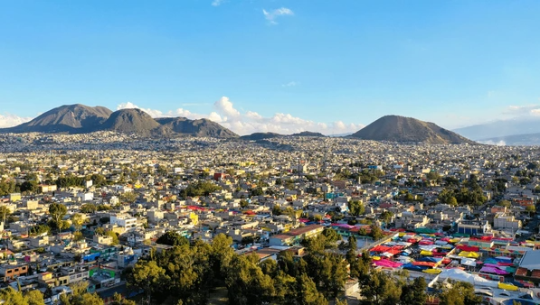

Interesting facts about IZTAPALAPA
- Iztapalapa is located on the eastern side of Mexico City.
- With a population of more tha 1.8 millions Iztapalapa is the most populous borough in the city.
- Iztapalapa was founded next to Lake Texcoco and was one of the most important towns during the pre-Hispanic era.
- At the top of the hill named "Cerro de la Estrella", there are the ruins of a pre-Hispanic temple that the Aztecs used to renew the Fire Ceremony (Fuego Nuevo) after every 52-years cycle. This great fire could be seen from various points in Tenochtitlán
- With the arrival of the Spanish, much of the city was destroyed and Catholic temples and convents were erected, which are now tourist attractions. Likewise, Catholicism predominates in Iztapalapa, especially during Holy Week, when the inhabitants reenact the Passion of Christ.
- Currently, support programs are being created to address inequality and poverty in Iztapalapa. Projects like the cable car called 'Cablebús' are being developed, which reduce travel time for residents to their workplaces, while also aiming to be considered a tourist attraction.